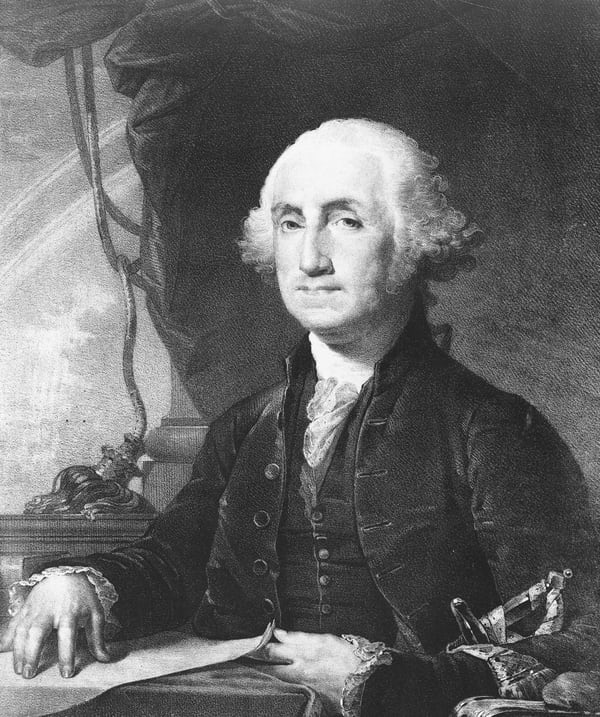

George Washington
The original President George Washington is often referred to as the Father the Nation, giving him immense dad-strength. Being a tall guy Washington would have a reach advantage over most presidents, but given his defeat of seven consecutive challengers from the Massachusetts volunteers during his time as the Commander of the Continental Armies at age 47 he would likely have some options if he ended up on the floor as well.
Table of Contents
Early Life
George Washington was born to Augustine and Mary Washington on February 22, 1732. Details of his early years are mostly prone to legend, such as him confessing to chopping down one of his father's cherry trees at age six because he could never tell a lie.
Military Career
Washington joined the ranks of the British army in 1753, proving himself a competent commander while fighting the French and Native Americans. As tensions were increasing leading up to The American Revolutionary War, Washington was outspoken towards the British oppression. As the war broke out in 1775, Washington was named commander-in-chief. The war would last until peace negotiations began in 1783, securing independence from the British.
Presidency
Washington was elected in 1789, and became the first President of the United States. He likely remains one of the strongest presidents, standing 183-192cm tall, weighing in at 95-100kg, he was known for his great strength. Recognizing the value of nutrition in achieving peak physical performance, he proclaimed November 26 as a day of Thanksgiving, encouraging fellow Americans to bulk up towards the winter. He spent the day fasting and visiting debtors in prison with meat and beer, further asserting his dominance.